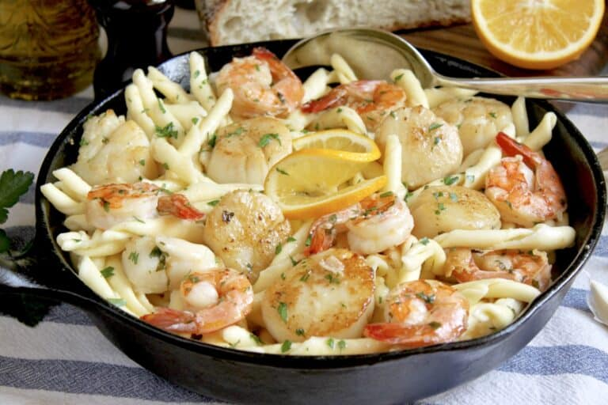

Seafood Pasta with Shrimp and Scallops

Description
A buttery garlic wine sauce pairs with shrimp and scallops in this easy dish. Add some pasta and dinner is served!
If you love shrimp, scallops, butter and garlic, this seafood pasta recipe is for you!
Ingredients
4 servings
- 1 lb (454 g) scallops, fresh or thawed
- Kosher salt
- 12 oz (340 g) good quality pasta
- 3 Tbsp extra virgin olive oil
- 1 lb. ground beef chuck (20% fat), patted dry
- 8 large or 12 medium raw shrimp, fresh or frozen (and thawed) peeled, and deveined
- 3 or 4 cloves minced garlic
- 1 cup dry white wine
- chopped Italian, flat leaf parsley
- freshly ground black pepper
- 2 to 3 oz (57 g to 85 g) good quality butter
- 1/3 cup (80 ml) dry white wine (you can substitute seafood stock or broth if you'd like)
- (lemon slices/wedges to serve)
Steps
- Soak the scallops for 10 minutes in a brine solution (3 Tbsp Kosher salt in 16 oz water.). Remove after 10 minutes and place on a rack to dry.
- Next, put a large pot of well salted water on to boil for the pasta. Once the pasta goes in, set a timer for 7 minutes before the pasta will be ready (according to package instructions.)
- Make sure the scallops are dry. If they are not, pat them dry with a paper towel. When the timer goes off, put a large cast iron pan on high heat and add the extra virgin olive oil.
- When the pan and oil are very hot, add the scallops and sear them for about 1 1/2 minutes before adding the shrimp, garlic, and parsley.
- Cook for another 2 minutes, then turn the scallops and shrimp and cook for a further 1 1/2 minutes. Next, add the wine, scraping the bottom of the pan; turn the heat down just to keep it warm.
- Add the butter and stir to melt. Add some freshly ground black pepper, if desired, then taste the sauce or a piece of seafood and add salt if needed.
- Drain the pasta, which should be ready, but reserve a cup or so of pasta water. You will only need this pasta water if you want to add some after mixing everything together. Add the pasta directly to the seafood sauce in the pan.
- Stir gently to incorporate all the ingredients together. Add some of the reserved pasta water, if desired, then top with a twist of lemon in the pan.
- Serve immediately as this seafood pasta dish is best piping hot. Don't forget some crusty bread to mop up the buttery garlic and wine sauce at the end!